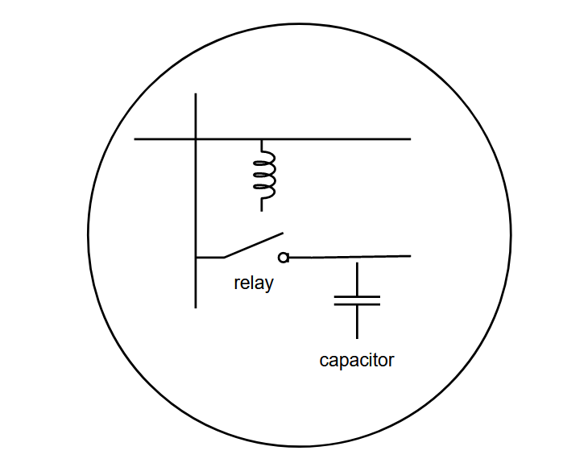
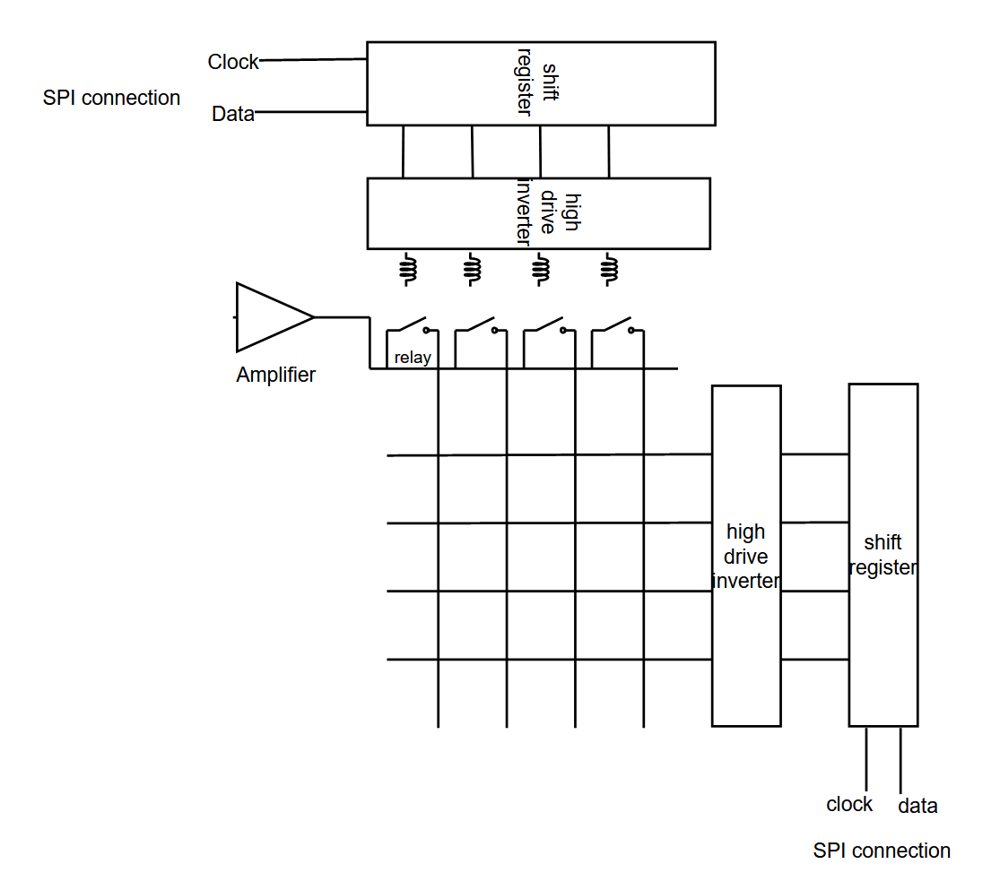

We have split up Blindle into three primary components and have been focusing on developing a small scale model of 2x4 braille cells as a proof of concept:
- the web application and translation from pdf to text to braille
- the signal select to determine which individual nodes need to be set high
- the electrotactile stimulation of each node
Web Application
On the computer, we have programmed a GUI to convert a PDF into a text file using the Python library ‘pdfminer’. The resulting text output is placed onto an external SD card that is wired up to an mBed via one of its SPI interfaces. From there, this text file is read in and using a lookup table in C++, each individual character is translated into a 3x2 array acting as a braille character and placed within a larger array that will be cycled through by the signal select. For the text to braille translation, the braille signals are represented by a 3x2 boolean array, whereby a False value corresponds to a pin that is turned off in a 3x2 braille cell and a True value corresponds to a pin that is activated. The program translates the braille character-by-character by first grabbing a string from the text being read, iterating through each character, using a lookup table to find its corresponding boolean representation, and outputting the signals to the device.
Electrotactle Stimulation
The crux of the Blindle project is being able to stimulate the nerves in a user’s finger to apply a phantom sensation of pressure, in lieu of a physical Braille pad. Sensation is directly tied to the current encountered by the nerves, which in turn is dependent upon how much power can be coupled through the skin. Blindle charges capacitors to a variable voltage that is specified by the user usually in the range of 60-100V, to deliver an electric impulse to the nerves in the user’s fingertips. While this voltage may seem large, the high impedance of human skin (which itself is a function of environmental and genetic factors) limits the resulting current to safe levels, usually no more than a couple of milliamps. This in turn provides a sensation akin to a small finger prick or a slight tingle.

Braille elements are charged by the signal select system, where the capacitor holds this charge until it is discharged when a finger passes across a metal pad connected to the capacitor.
Signal Select
Individual Braille elements are selected with a cross-power array that is controlled by a microcontroller (LPC1768) and two shift registers. Each shift register takes inputs from the output pins of the microcontroller, and shifts up to one byte of data between its output pins, allowing for sequential selection. In our cross-power array, one shift register is used to select columns and one shift register is used to control rows. By operating these shift registers at different speeds, it is possible to loop through all elements in each column before moving to the next column.

Each shift register output is tied to the base of a transistor that is used to drive a relay. These relays are used to switch on and off the charging of capacitors that are used for sensation. While typically MOSFETs are used for switching signals, the large voltages and changing voltage across the capacitor being charged at each Braille cell make relays a more logical choice.